wcGeneSummary
Noriaki Sato
basic_usage_of_wcGeneSummary.RmdThis package aims to visualize the word and text information contained in the gene or the other omics identifiers such as microbiome, and identify important words among the clusters, and compare the clusters based on those information. It contributes to understanding the gene clusters and aid in easy interpretation and visualization.
Basic usage
Load the package and the database for converting identifiers. In this
example, we use mostly human-derived data, and use
org.Hs.eg.db.
Producing word clouds
We use ERCC genes as input. The basic usage of the package is
producing a word cloud of gene summaries by querying gene IDs, default
to symbol. The other type can be set by keyType. As many of
the words are commonly observed, you should limit word frequency by
excludeFreq, which is default to 2000. TF-IDF on the all
the summary is precomputed, and excludeTfIdf can be
specified too.
## Configure input genes
inpSymbol <- c("ERCC1","ERCC2","ERCC3","ERCC4","ERCC5","ERCC6","ERCC8")
gwc <- wcGeneSummary(inpSymbol)## Input genes: 7
## Converted input genes: 7
## filtered 61 words (frequency | tfidf) ...
gwc$wc
It accepts values of the wordcloud() function.
numWords specifies how many words are to be shown on word
cloud. The words are ordered by their frequency, and the subset of
1:numWords is used to downstream visualization.
## Use palette from palettetown, palettetown::pokepal(150) (Mewtwo!)
gwc <- wcGeneSummary(inpSymbol, random.order=FALSE,
numWords=100,
excludeTfIdf = 150,
colors=palette(),
rot.per=0.4)## Input genes: 7
## Converted input genes: 7
## filtered 104 words (frequency | tfidf) ...
gwc$wc
It also returns a data frame consisting of frequency of each term.
| word | freq |
|---|---|
| repair | 16 |
| DNA | 11 |
| syndrome | 9 |
| excision | 8 |
| cockayne | 6 |
| pigmentosum | 6 |
N-gram is supported by library tm, specified by
ngram. Default is 1, and the example
specifying 2 is shown below.
gwc2 <- wcGeneSummary(inpSymbol, ngram=2, numWords=50)## Input genes: 7## 'select()' returned 1:1 mapping between keys and columns## Converted input genes: 7
## filtered 61 words (frequency | tfidf) ...
gwc2$wc
Using clusterProfiler functions, one can use enriched
pathway names for visualization. The enrich option can be
specified for 'kegg' or 'reactome', this time
we specify 'reactome'.
gwc3 <- wcGeneSummary(inpSymbol, enrich="reactome", tfidf=TRUE, numWords=50)## Input genes: 7## 'select()' returned 1:1 mapping between keys and columns## Converted input genes: 7
## filtered 61 words (frequency | tfidf) ...
## performing enrichment analysis ...
gwc3$wcOne of the main questions is which words can be clustered together
among the words contained in the queried gene cluster. Word clustering
(pvclust) and identified significant clusters based on the
occurrence in the text can be visualized by specifying
tag=TRUE. For the significance threshold,
pvclAlpha can be specified. The default parameters perform
pvclust on the subset of dataset for words with high
frequency specified by numWords. If one want to perform on
whole matrix (which is a natural way), tagWhole=TRUE can be
specified, although it is computationally intensive.
## Cluster on subset of words
gwcl <- wcGeneSummary(inpSymbol,
numWords=30,
tag=TRUE,
pal = palette(),
rot.per=0.4)## Input genes: 7## 'select()' returned 1:1 mapping between keys and columns## Converted input genes: 7
## filtered 61 words (frequency | tfidf) ...
## Bootstrap (r = 0.5)... Done.
## Bootstrap (r = 0.6)... Done.
## Bootstrap (r = 0.7)... Done.
## Bootstrap (r = 0.8)... Done.
## Bootstrap (r = 0.9)... Done.
## Bootstrap (r = 1.0)... Done.
## Bootstrap (r = 1.1)... Done.
## Bootstrap (r = 1.2)... Done.
## Bootstrap (r = 1.3)... Done.
## Bootstrap (r = 1.4)... Done.
gwcl$wc
gwcl$pvcl## $clusters
## $clusters[[1]]
## [1] "pigmentosum" "xeroderma"
##
## $clusters[[2]]
## [1] "activity" "atpdependent"
## [3] "basal" "cerebrooculofacioskeletal"
## [5] "characterized" "complementation"
## [7] "damage" "defects"
## [9] "exon" "factor"
## [11] "forms" "functions"
## [13] "helicase" "heterodimeric"
## [15] "incision" "including"
## [17] "interacts" "light"
## [19] "nucleotide" "product"
## [21] "transcriptioncoupled"
##
## $clusters[[3]]
## [1] "dna" "repair"
##
##
## $edges
## [1] 6 22 23
## Cluster on whole matrix
library(RColorBrewer)
pal <- brewer.pal(4, "PuOr")
pal <- colorRampPalette(pal)(20)
gwclWhole <- wcGeneSummary(inpSymbol,
numWords=50,
tag=TRUE, tagWhole=TRUE,
pal = pal,
rot.per=0.4)## Input genes: 7## 'select()' returned 1:1 mapping between keys and columns## Converted input genes: 7
## filtered 61 words (frequency | tfidf) ...
## Bootstrap (r = 0.5)... Done.
## Bootstrap (r = 0.6)... Done.
## Bootstrap (r = 0.69)... Done.
## Bootstrap (r = 0.8)... Done.
## Bootstrap (r = 0.9)... Done.
## Bootstrap (r = 1.0)... Done.
## Bootstrap (r = 1.1)... Done.
## Bootstrap (r = 1.19)... Done.
## Bootstrap (r = 1.3)... Done.
## Bootstrap (r = 1.4)... Done.
gwclWhole$wc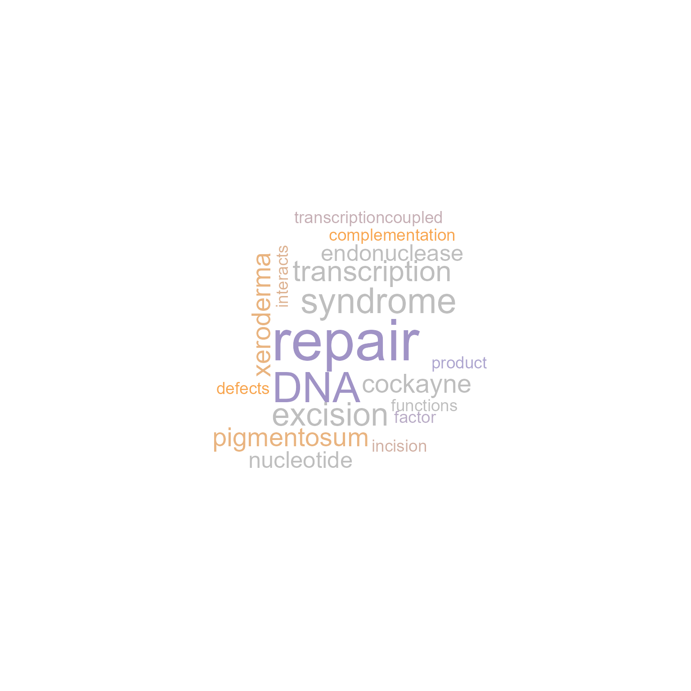
gwclWhole$pvcl## $clusters
## $clusters[[1]]
## [1] "abnormally" "active" "csb"
## [4] "defective" "disease" "hereditary"
## [7] "identified" "iih" "p44"
## [10] "radiation" "repeat" "sensitive"
## [13] "transcriptionally" "ultraviolet"
##
## $clusters[[2]]
## [1] "activates" "adjacent" "atpase" "atpstimulated"
## [5] "dnabinding" "downstream" "encode" "formation"
## [9] "frame" "fusion" "geneid" "individual"
## [13] "occurs" "polyadenylation" "promote" "reading"
## [17] "sequence" "shares" "sites"
##
## $clusters[[3]]
## [1] "class" "tfiih"
##
## $clusters[[4]]
## [1] "complementation" "defects"
##
## $clusters[[5]]
## [1] "eme1" "ercc1" "structure" "xp6"
##
## $clusters[[6]]
## [1] "orf" "piggybackderived3" "splice"
##
## $clusters[[7]]
## [1] "pigmentosum" "xeroderma"
##
## $clusters[[8]]
## [1] "interacts" "type"
##
## $clusters[[9]]
## [1] "incision" "including" "light"
##
## $clusters[[10]]
## [1] "transcriptioncoupled" "upstream"
##
## $clusters[[11]]
## [1] "basic" "bivm" "cachexia" "cancer"
## [5] "cellular" "characterized" "cognitive" "develop"
## [9] "development" "disability" "disorder" "exists"
## [13] "exposure" "function" "growth" "hypersensitivity"
## [17] "immunoglobulin" "increased" "motif" "neighboring"
## [21] "patients" "processes" "read" "referred"
## [25] "severe" "singlestrand" "skin" "specific"
## [29] "susceptibility" "uvinduced" "variable" "vii"
## [33] "xp7"
##
## $clusters[[12]]
## [1] "atpdependent" "basal" "belongs"
## [4] "btf2tfiih" "cancerprone" "disorders"
## [7] "factor" "helicase" "helicases"
## [10] "integral" "mechanism" "rad3xpd"
## [13] "subfamily" "trichothiodystrophy"
##
## $clusters[[13]]
## [1] "alter" "carcinogenesis"
## [3] "catalyzes" "cd3e"
## [5] "cerebrooculofacioskeletal" "cisplatin"
## [7] "compounds" "crosslinks"
## [9] "electrophilic" "epsilon"
## [11] "ercc4" "excising"
## [13] "exon" "formed"
## [15] "forms" "heterodimer"
## [17] "heterodimeric" "induced"
## [19] "interstrand" "lesion"
## [21] "lesions" "molecule"
## [23] "overlaps" "pathway"
## [25] "play" "polymorphisms"
## [27] "process" "product"
## [29] "recombinational" "required"
## [31] "result" "strand"
## [33] "xpf"
##
## $clusters[[14]]
## [1] "dna" "repair"
##
##
## $edges
## [1] 13 31 98 99 102 105 107 108 111 118 119 121 125 131In this example showing ERCC genes, the term DNA repair
is clustered as expected.
Producing correlation networks
The next main function is producing correlation networks between words based on the co-occurrence of the words in the text.
net <- wcGeneSummary(inpSymbol, plotType="network")## Input genes: 7
## Converted input genes: 7
## filtered 61 words (frequency | tfidf) ...
net$net
The edge label corresponding to correlation values can be shown by
edgeLabel=TRUE. The number of words to be shown on plot can
be specified by numWords. The threshold of correlation can
be specified by corThresh. The text color can be changed by
colorText=TRUE. The type of edge can be specified by
edgeLink, which is by default TRUE (link will
be used).
net <- wcGeneSummary(inpSymbol, plotType="network",
edgeLabel=TRUE, corThresh=0.5,
numWords=20, colorText=TRUE)## Input genes: 7
## Converted input genes: 7
## filtered 61 words (frequency | tfidf) ...
net$net
The clustering results based on pvclust can be shown
also on the correlation network, by the node color
(tag=TRUE).
net <- wcGeneSummary(inpSymbol, plotType="network", corThresh=0.2,
numWords=20, tag=TRUE)## Input genes: 7
## Converted input genes: 7
## filtered 61 words (frequency | tfidf) ...
## Bootstrap (r = 0.5)... Done.
## Bootstrap (r = 0.6)... Done.
## Bootstrap (r = 0.7)... Done.
## Bootstrap (r = 0.8)... Done.
## Bootstrap (r = 0.9)... Done.
## Bootstrap (r = 1.0)... Done.
## Bootstrap (r = 1.1)... Done.
## Bootstrap (r = 1.2)... Done.
## Bootstrap (r = 1.3)... Done.
## Bootstrap (r = 1.4)... Done.
net$net
net$pvcl## $clusters
## $clusters[[1]]
## [1] "pigmentosum" "xeroderma"
##
## $clusters[[2]]
## [1] "activity" "atpdependent" "complementation"
## [4] "defects" "factor" "functions"
## [7] "incision" "interacts" "nucleotide"
## [10] "product" "transcriptioncoupled"
##
## $clusters[[3]]
## [1] "dna" "repair"
##
##
## $edges
## [1] 2 12 13The genes associated with the corresponding words can be shown by
specifying genePlot=TRUE, useful for assessing which words
is associated with interesting genes. The edges connecting words to
corresponding genes are shown. Additionally, one can specify
genePlotNum for limiting the genes shown, which can be
useful for identifying important genes associated with high-frequent
words.
net <- wcGeneSummary(inpSymbol, plotType="network",
genePlot=TRUE, corThresh=0.5,
tag=TRUE, edgeLink=FALSE,
numWords=20)## Input genes: 7
## Converted input genes: 7
## filtered 61 words (frequency | tfidf) ...
## Bootstrap (r = 0.5)... Done.
## Bootstrap (r = 0.6)... Done.
## Bootstrap (r = 0.7)... Done.
## Bootstrap (r = 0.8)... Done.
## Bootstrap (r = 0.9)... Done.
## Bootstrap (r = 1.0)... Done.
## Bootstrap (r = 1.1)... Done.
## Bootstrap (r = 1.2)... Done.
## Bootstrap (r = 1.3)... Done.
## Bootstrap (r = 1.4)... Done.
net$net
The associated enriched pathways (if present) can be shown by
specifying genePathPlot, using ggforce. In
this option, the function first performs over-representation analysis on
the whole gene set, and plot enriched terms for included genes in the
plot. Enrichment analysis here is performed by the library
clusterProfiler or ReactomePA, and one can
control which pathways to plot by genePathPlotSig
value.
net <- wcGeneSummary(inpSymbol, plotType="network",
genePathPlot="reactome", corThresh=0.5,
tag=TRUE, edgeLink=FALSE,
genePathPlotSig=0.05, numWords=20)## Input genes: 7
## Converted input genes: 7
## filtered 61 words (frequency | tfidf) ...
## Bootstrap (r = 0.5)... Done.
## Bootstrap (r = 0.6)... Done.
## Bootstrap (r = 0.7)... Done.
## Bootstrap (r = 0.8)... Done.
## Bootstrap (r = 0.9)... Done.
## Bootstrap (r = 1.0)... Done.
## Bootstrap (r = 1.1)... Done.
## Bootstrap (r = 1.2)... Done.
## Bootstrap (r = 1.3)... Done.
## Bootstrap (r = 1.4)... Done.
## found 47 enriched term ...
net$net
Visualization of PubMed information.
Using easyPubMed, one can perform the same analysis on
PubMed text like the article title and abstract. The function queries
for the input gene symbols (or microbes) and visualize. For typical use
cases, the genes identified by showing genePlot, or hub
genes identified in gene network analysis can be queried.
ab <- wcAbst(inpSymbol[1:3])## querying pubmed for ERCC1 OR ERCC2 OR ERCC3
## converting to a data frame ...
ab$wcAs fetching the same information is not desirable and time consuming,
the same object can be passed to redo option and re-perform
the analysis like tagging, or changing the visualization options.
abtag <- wcAbst(redo=ab, tag=TRUE)## Resuming from the previous results ...
## Bootstrap (r = 0.5)... Done.
## Bootstrap (r = 0.6)... Done.
## Bootstrap (r = 0.7)... Done.
## Bootstrap (r = 0.8)... Done.
## Bootstrap (r = 0.9)... Done.
## Bootstrap (r = 1.0)... Done.
## Bootstrap (r = 1.1)... Done.
## Bootstrap (r = 1.2)... Done.
## Bootstrap (r = 1.3)... Done.
## Bootstrap (r = 1.4)... Done.
abtag2 <- wcAbst(redo=abtag, tag=TRUE, genePlot=TRUE,
plotType="network", corThresh=0.2, preset=TRUE)## Resuming from the previous results ...
## Using previous pvclust results ...
abtag$wc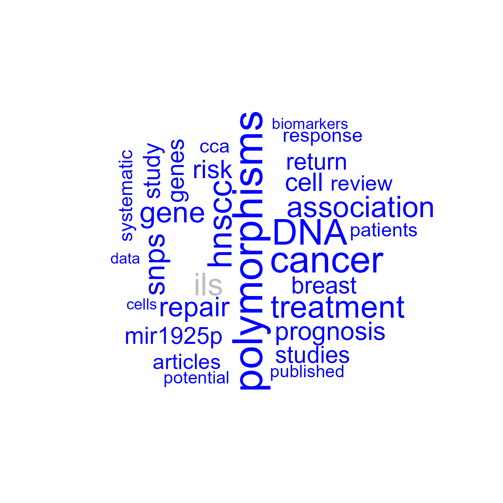
abtag2$net## Warning: Removed 3 rows containing missing values (`geom_point()`).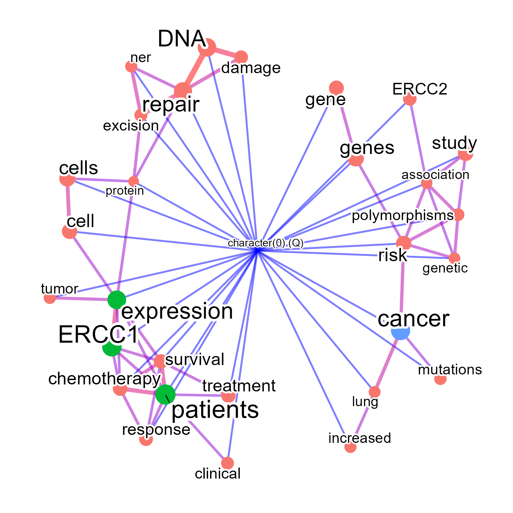
Comparing two or more networks
One can compare two or more networks by providing list of objects
produced by wc* functions, like wcGeneSummary and
wcAbst. This can be useful for assessing the similarity and
dissimilarity of the various text sources, like PubMed, RefSeq, and
Reactome pathway names.
cxcls <- c()
for (i in c(1,2,3,5,6,8,9,10,11,12,13,14,16)){
cxcls <- c(cxcls, paste0("CXCL",i))
}
net1 <- wcGeneSummary(inpSymbol, plotType="network",
corThresh=0.5, numWords=20)## Input genes: 7## 'select()' returned 1:1 mapping between keys and columns## Converted input genes: 7
## filtered 61 words (frequency | tfidf) ...
net2 <- wcGeneSummary(cxcls, plotType="network",
corThresh=0.5, numWords=20)## Input genes: 13## 'select()' returned 1:1 mapping between keys and columns## Converted input genes: 13
## filtered 61 words (frequency | tfidf) ...
net3 <- wcAbst(redo=ab, plotType="network",
corThresh=0.2, numWords=20)## Resuming from the previous results ...
## Not having meaningful overlaps
compareWordNet(list(net1, net2),
titles=c("ercc","cxcl"))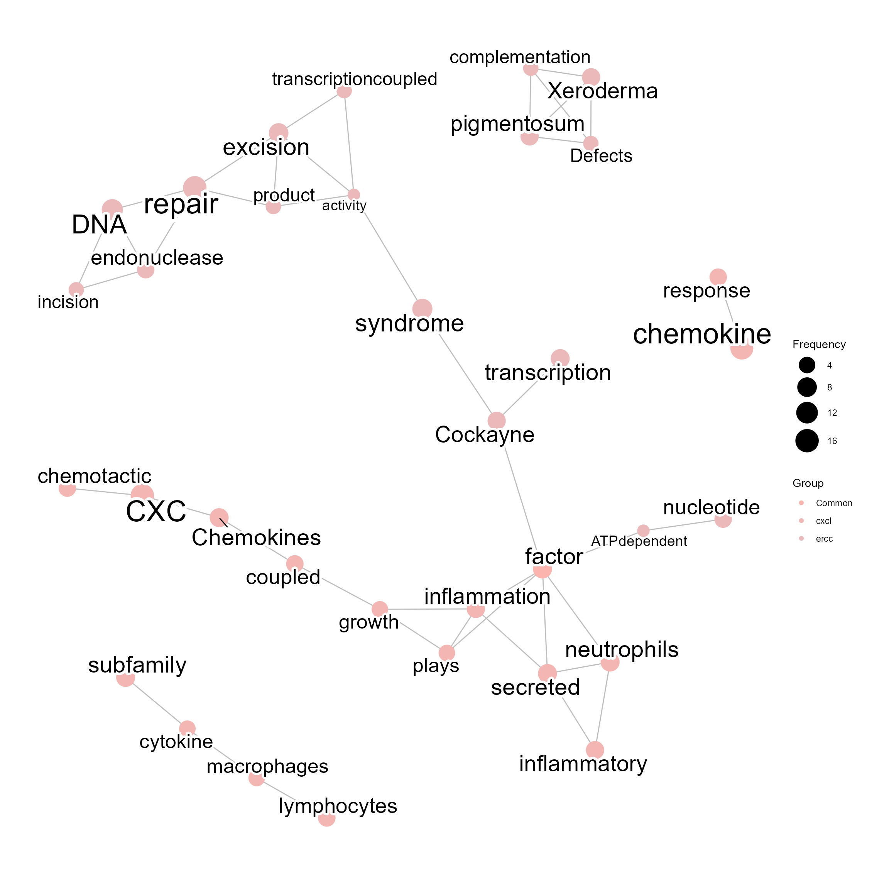
compareWordNet(list(net1, net3),
titles=c("ercc","ercc-PubMed"))
compareWordNet(list(net1, net2, net3),
titles=c("ercc","cxcl", "ercc-PubMed"))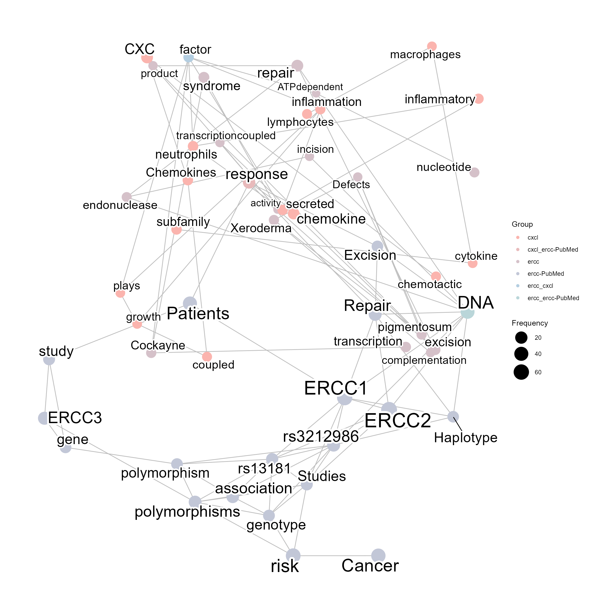
If tag information is available in both gene clusters,
combined tags can be visualized by tag=TRUE.
keggPathways <- org.Hs.egPATH2EG
mappedKeys <- mappedkeys(keggPathways)
keggList <- as.list(keggPathways[mappedKeys])
net1 <- wcGeneSummary(keggList$`05210`,
keyType="ENTREZID",
plotType="network",
corThresh=0.3,
numWords=30,
tag=TRUE,
excludeTfIdf=150)## Input genes: 62
## filtered 104 words (frequency | tfidf) ...
## Bootstrap (r = 0.5)... Done.
## Bootstrap (r = 0.6)... Done.
## Bootstrap (r = 0.7)... Done.
## Bootstrap (r = 0.8)... Done.
## Bootstrap (r = 0.9)... Done.
## Bootstrap (r = 1.0)... Done.
## Bootstrap (r = 1.1)... Done.
## Bootstrap (r = 1.2)... Done.
## Bootstrap (r = 1.3)... Done.
## Bootstrap (r = 1.4)... Done.
net2 <- wcGeneSummary(keggList$`05211`,
keyType="ENTREZID",
plotType="network",
corThresh=0.3,
numWords=30,
tag=TRUE,
excludeTfIdf=150)## Input genes: 70
## filtered 104 words (frequency | tfidf) ...
## Bootstrap (r = 0.5)... Done.
## Bootstrap (r = 0.6)... Done.
## Bootstrap (r = 0.7)... Done.
## Bootstrap (r = 0.8)... Done.
## Bootstrap (r = 0.9)... Done.
## Bootstrap (r = 1.0)... Done.
## Bootstrap (r = 1.1)... Done.
## Bootstrap (r = 1.2)... Done.
## Bootstrap (r = 1.3)... Done.
## Bootstrap (r = 1.4)... Done.
compareWordNet(list(net1, net2), tag=TRUE)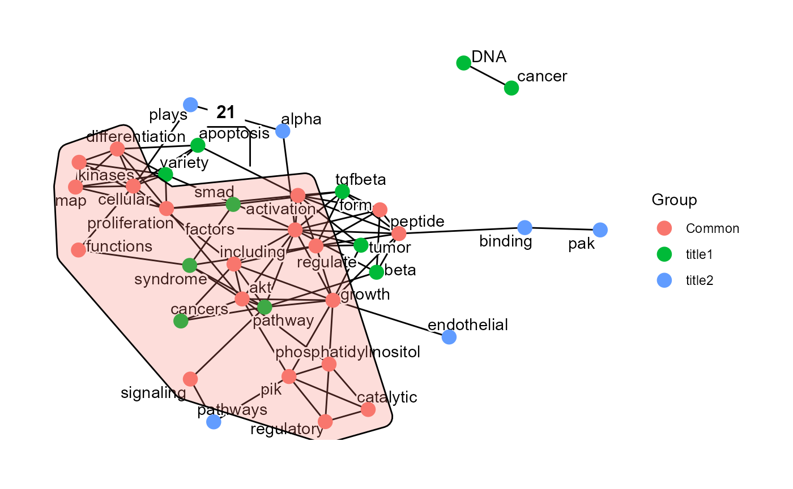
Text over represenatation analysis (experimental)

## lipoic step acid lipoateactivating
## 1.615498e-14 8.089194e-08 5.359204e-07 1.488290e-04
## lipoatedependent lipoyl
## 1.488290e-04 1.488290e-04
## drb chain complement class exon beta
## 0.000000e+00 6.765249e-82 3.613201e-74 5.708725e-46 8.532718e-39 1.663151e-34This thresholding can be used in RefSeq visualization. Filter words
using ORA threshold and frequency threshold by setting
ora=TRUE.
net <- wcGeneSummary(inpSymbol, plotType="network",
ora=TRUE, edgeLink=FALSE)## Input genes: 7
## Converted input genes: 7
## filtered 61 words (frequency | tfidf) ...
## performing ORA
## filtered 148 words (ORA) ...
net$net
Custom usage
Recluster the cluster using word information
simExample <- returnSim(returnExample()$color,
keyType="ENSEMBL", ora=TRUE)## Number of clusters: 3
## 1
## Input genes: 12
## Converted input genes: 12
## filtered 61 words (frequency | tfidf) ...
## performing ORA
## filtered 109 words (ORA) ...
## 2
## Input genes: 13
## Converted input genes: 13
## filtered 61 words (frequency | tfidf) ...
## performing ORA
## filtered 238 words (ORA) ...
## 3
## Input genes: 7
## Converted input genes: 7
## filtered 61 words (frequency | tfidf) ...
## performing ORA
## filtered 148 words (ORA) ...
heatmap(simExample)
Interactive inspection of Bayesian network annotated by words
In this example, a Bayesian network showing the module eigengenes
relationship are inferred using boot.strength function in
bnlearn from the weighted gene correlation network analysis
(WGCNA) results. The modules are annotated by word clouds produced by
wcGeneSummary(), and can be exported to the format of
Cytoscape.js or vis.js. In this way, module
relationship can be interactively inspected with the functional
implications.
## In this example, we simulate WGCNA results.
## you can just use results from WGCNA.
## Assuming WGCNA results are stored in `mod`
mod <- wcGeneSummary::returnExample()
MEs <- mod$MEs
modColors <- mod$colors
ensg <- names(modColors)
# library(bnlearn)
library(igraph)
## Replace like boot.strength(mod$MEs, R=500, algorithm = "hc")
# dag <- model2network("[ME1][ME2|ME1]") # If using bnlearn
dag <- graph_from_literal( ME1-+ME2, ME1-+ME3 )
## Convert to igraph
# g <- as.igraph(dag)
g <- dag
## Assign edge attributes
## Skip, if you perform boot.strength, the edge attributes can be added from the result
# el <- data.frame(as_edgelist(g))
# colnames(el) <- c("from","to")
# el <- left_join(el, bs)
# E(g)$strength <- el$strength
# E(g)$direction <- el$direction
## Node attributes
V(g)$stripName <- gsub("ME","",V(g)$name)
sizes <- table(modColors)
V(g)$size <- as.numeric(sizes[V(g)$stripName])
## Directory to save images and a script
rootDir <- "./"
netDir <- "visCyjs"
imageDir <- "images"
dir.create(paste0(rootDir, netDir))
dir.create(paste0(rootDir, netDir, "/", imageDir))
images <- c()
plotType <- "bar"
numLim <- 200 # limit for gene number
for (i in V(g)$name){
print(i)
i <- as.numeric(gsub("ME","",i)) # strip ME
queries <- ensg[modColors==i]
if (length(queries)>numLim) {
warning("Sampling random genes")
queries <- queries[sample(1:length(queries), numLim)] ## Temporary restrict to randomly chosen genes, should be replaced to like kME values
}
## Convert to ENTREZ
entre <- AnnotationDbi::select(org.Hs.eg.db, keytype="ENSEMBL",
keys = queries, columns = "ENTREZID")$ENTREZID
if (plotType=="bar"){
plt <- makeBar(entre, keyType="ENTREZID") # get barplot
} else { ## If wordcloud
# A <- wcGeneSummary(entre,
# madeUpper=c("dna","rna",
# tolower(keys(org.Hs.eg.db, keytype="SYMBOL"))))
# palNum <- sample(1:151,1) # palettetown
#
# ## This time use ggwordcloud()
# plt <- ggwordcloud::ggwordcloud(A$df$word, A$df$freq,
# shape="circle", min.freq = 10,
# rot.per = 0.5, random.order = FALSE,
# colors = pokepal(palNum))+
# scale_size_area(max_size = 40)
}
## Save images
ggsave(paste0(rootDir, netDir, "/", imageDir, "/", i ,".png"),
plt, dpi=300, width=10, height=10)
## Store image dir
images <- c(images, paste0(imageDir, "/", i ,".png"))
}## [1] "ME1"
## Input genes: 12
## filtered 61 words (frequency | tfidf) ...## [1] "ME2"
## Input genes: 13
## filtered 61 words (frequency | tfidf) ...## [1] "ME3"
## Input genes: 7
## filtered 61 words (frequency | tfidf) ...
V(g)$image <- images
## Node shape
if (plotType=="bar"){
V(g)$shape <- rep("rectangle", length(V(g)))
} else {
V(g)$shape <- rep("circle", length(V(g)))
}
## Scale the node size
sizeMin <- 50
sizeMax <- 200
rawMin <- min(V(g)$size)
rawMax <- max(V(g)$size)
scf <- (sizeMax-sizeMin)/(rawMax-rawMin)
V(g)$size <- scf * V(g)$size + sizeMin - scf * rawMin
## Export
exportCyjs(g, rootDir, netDir)
# or, exportVisjs(g, rootDir, netDir)Use like http-server in the directory containing a
exported JavaScript, and interactively inspect the module relationship
with word information.
The example visualization is shown below (not by the code above).

Example visualization of a Bayesian network
Annotating module eigengenes dendrogram
As users of WGCNA typically plot dendrogramm and heatmap of module
eigengenes using plotEigengeneNetworks, it is useful to
combine with wcGeneSummary, which plot additional word information on a
dendrogram with one line.
# WGCNA::plotEigengeneNetworks(mod$MEs, mod$colors, plotHeatmaps = FALSE)
plotEigengeneNetworksWithWords(MEs, modColors)## Bootstrap (r = 0.5)... Done.
## Bootstrap (r = 0.6)... Done.
## Bootstrap (r = 0.7)... Done.
## Bootstrap (r = 0.8)... Done.
## Bootstrap (r = 0.9)... Done.
## Bootstrap (r = 1.0)... Done.
## Bootstrap (r = 1.1)... Done.
## Bootstrap (r = 1.2)... Done.
## Bootstrap (r = 1.3)... Done.
## Bootstrap (r = 1.4)... Done.
Assess the occurrence of the speicific words across gene clusters
##
## Attaching package: 'limma'## The following object is masked from 'package:BiocGenerics':
##
## plotMA
library(ggrepel)
query <- "DNA repair"
tab <- getGeneKEGGLinks(species="hsa")
listOfGenes <- list()
for (path in unique(tab$PathwayID)){
listOfGenes[[path]] <- subset(tab, PathwayID==path)$GeneID
}
frq <- findTerm(query, listOfGenes[sample(length(listOfGenes), 20)],
split=TRUE,
keyType="ENTREZID")## Finding query in 20 clusters ...
## Input genes: 44
## filtered 61 words (frequency | tfidf) ...
## Input genes: 87
## filtered 61 words (frequency | tfidf) ...
## Input genes: 197
## filtered 61 words (frequency | tfidf) ...
## Input genes: 47
## filtered 61 words (frequency | tfidf) ...
## Input genes: 131
## filtered 61 words (frequency | tfidf) ...
## Input genes: 99
## filtered 61 words (frequency | tfidf) ...
## Input genes: 4
## filtered 61 words (frequency | tfidf) ...
## Input genes: 112
## filtered 61 words (frequency | tfidf) ...
## Input genes: 85
## filtered 61 words (frequency | tfidf) ...
## Input genes: 75
## filtered 61 words (frequency | tfidf) ...
## Input genes: 26
## filtered 61 words (frequency | tfidf) ...
## Input genes: 27
## filtered 61 words (frequency | tfidf) ...
## Input genes: 295
## filtered 61 words (frequency | tfidf) ...
## Input genes: 36
## filtered 61 words (frequency | tfidf) ...
## Input genes: 148
## filtered 61 words (frequency | tfidf) ...
## Input genes: 27
## filtered 61 words (frequency | tfidf) ...
## Input genes: 32
## filtered 61 words (frequency | tfidf) ...
## Input genes: 364
## filtered 61 words (frequency | tfidf) ...
## Input genes: 531
## filtered 61 words (frequency | tfidf) ...
## Input genes: 89
## filtered 61 words (frequency | tfidf) ...
plt <- data.frame(t(data.frame(frq, check.names=FALSE)),
check.names=FALSE)
plt$name <- gsub("path:", "", rownames(plt))
p <- ggplot(plt, aes(dna, repair, label = plt[,3])) +
geom_point(color = "red")+
geom_text_repel(bg.color="white")+theme_minimal()+
xlab("dna")+ylab("repair")
p## Warning: ggrepel: 13 unlabeled data points (too many overlaps). Consider
## increasing max.overlaps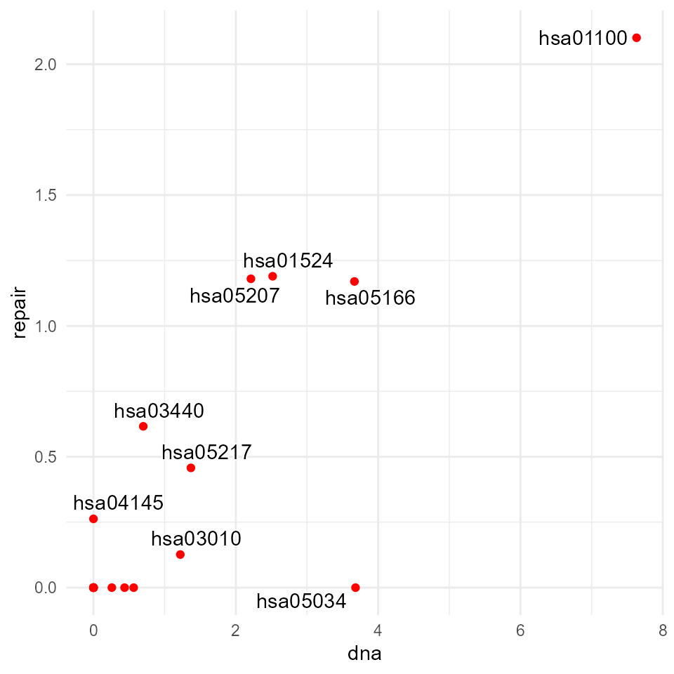
Application examples
We demonstrate an use case, which investigates transcriptomic changes induced by BK polyomavirus (BKPyV) infection in renal proximal tubular epithelial cells (An et al. 2019). Differentially expressed genes in 3 days post-infection were obtained, and down-regulated genes in BKPyV infected cells were examined.
Load the necessary packages and genes
library(wcGeneSummary)
library(org.Hs.eg.db)
library(ggplot2)
library(ReactomePA);library(clusterProfiler)
library(ggraph)
degs <- wcGeneSummary:::d3degDownAn2019
length(degs)## [1] 106
degs## [1] "PAFAH2" "RPL7P9" "ACP6" "MTMR11" "KDM5B"
## [6] "RPL21P19" "GPR137B" "SH3YL1" "PELI1" "KRCC1"
## [11] "RGPD5" "GRB14" "ITGA6" "GPR155" "CFLAR"
## [16] "OXSM" "FBXL2" "RPL7AP11" "GOLGB1" "EEF1A1P25"
## [21] "DLG1" "TRAPPC11" "CYP4V2" "EEF1A1P19" "PLK2"
## [26] "RAD17" "ANKRA2" "ARHGEF28" "SLC22A5" "FBXO38"
## [31] "MAT2B" "MRS2" "HCG11" "LMBRD1" "SESN1"
## [36] "ECHDC1" "L3MBTL3" "MED23" "SGK1" "CCZ1"
## [41] "ZNF12" "PLEKHA8" "SEMA3C" "RPS3AP26" "BMT2"
## [46] "OGT" "RNF170" "TP53INP1" "RRM2B" "PRNCR1"
## [51] "ZNF252P" "RPL4P5" "KLHL9" "SECISBP2" "HSDL2"
## [56] "CUTALP" "TSC1" "FBXO3" "DDB2" "SRSF8"
## [61] "JRKL" "TLCD5" "ZNF248" "ZNF33B" "DYNC1I2P1"
## [66] "RPL17P50" "FAS" "OGA" "WDR11" "DHX32"
## [71] "CD27-AS1" "OVCH1-AS1" "CAPRIN2" "TSPAN31" "RPSAP52"
## [76] "MDM2" "LTA4H" "ARL1" "APPL2" "ZNF84"
## [81] "ZNF140" "N4BP2L2" "TRIM13" "MBNL2" "RNU1-27P"
## [86] "MAP4K5" "TMEM260" "RPL41P2" "APH1B" "ST20"
## [91] "AKTIP" "ZFP90" "RPL21P120" "TOM1L1" "POLI"
## [96] "PLCB4" "PCMTD2" "ZNF561" "ZNF561-AS1" "RPL9P32"
## [101] "ZNF226" "ZNF528-AS1" "ZNF419" "ZNF154" "BACH1"
## [106] "GRIK1-AS2"Enrichment analysis
First, we perform enrichment analysis using ReactomePA. From the enrichment analysis results, the cluster is related to transcriptional regulation by TP53.
## Convert to ENTREZID
entre <- AnnotationDbi::select(org.Hs.eg.db, keytype="SYMBOL",
keys = degs, columns = "ENTREZID")$ENTREZID
pway <- setReadable(enrichPathway(entre), org.Hs.eg.db)
sigpway <- subset(pway@result, p.adjust<0.05)
sigpway$Description## [1] "Homo sapiens\r: Transcriptional Regulation by TP53"
## [2] "Homo sapiens\r: RIPK1-mediated regulated necrosis"
## [3] "Homo sapiens\r: Regulation of necroptotic cell death"
## [4] "Homo sapiens\r: Regulated Necrosis"
## [5] "Homo sapiens\r: Regulation by c-FLIP"
## [6] "Homo sapiens\r: CASP8 activity is inhibited"
## [7] "Homo sapiens\r: Dimerization of procaspase-8"
cnetplot(pway)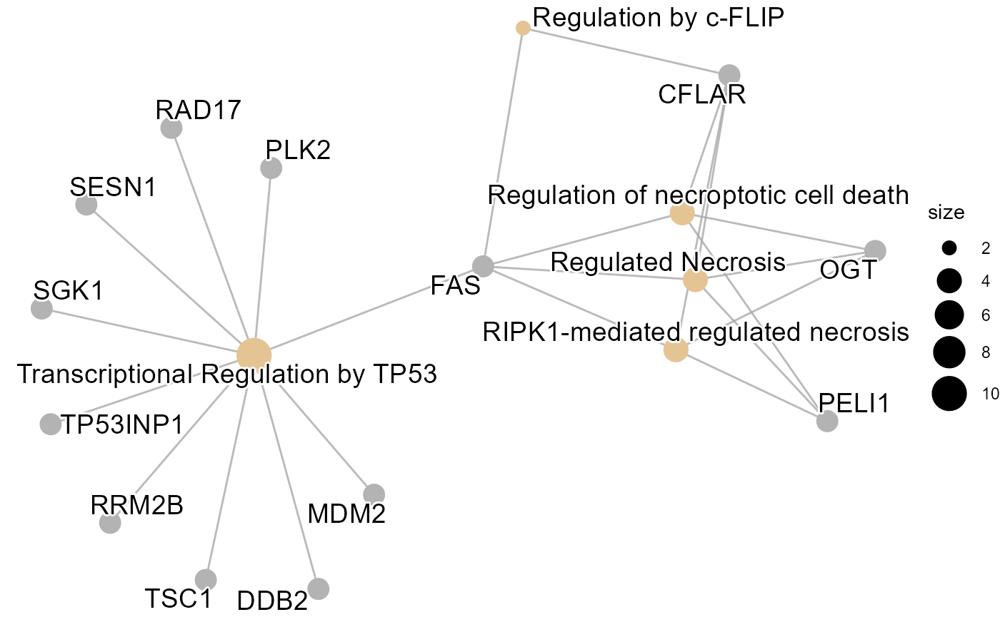
## Genes involved in significant pathways
unlist(unique(sapply(sigpway$geneID, function (x) strsplit(x,"/"))))## [1] "PLK2" "RAD17" "SESN1" "SGK1" "TP53INP1" "RRM2B"
## [7] "TSC1" "DDB2" "FAS" "MDM2" "PELI1" "CFLAR"
## [13] "OGT" "FAS" "CFLAR" "FAS"We store the name of enriched pathways in the network for the downstream analysis.
netreac <- wcGeneSummary(degs,
enrich="reactome",
plotType="network",
numWords=50,
colorText=TRUE)## Input genes: 106## 'select()' returned 1:1 mapping between keys and columns## Converted input genes: 106
## filtered 61 words (frequency | tfidf) ...
## performing enrichment analysis ...Text mining the gene summaries
Next we perform the plain function producing a correlation network, with showing the genes related to high-frequency words in the text.
net1 <- wcGeneSummary(degs, plotType="network",
colorText=TRUE, numWords=20,
genePlot=TRUE, genePlotNum=5,
genePathPlot="reactome")## Input genes: 106
## Converted input genes: 106
## filtered 61 words (frequency | tfidf) ...
## found 7 enriched term ...
net1$net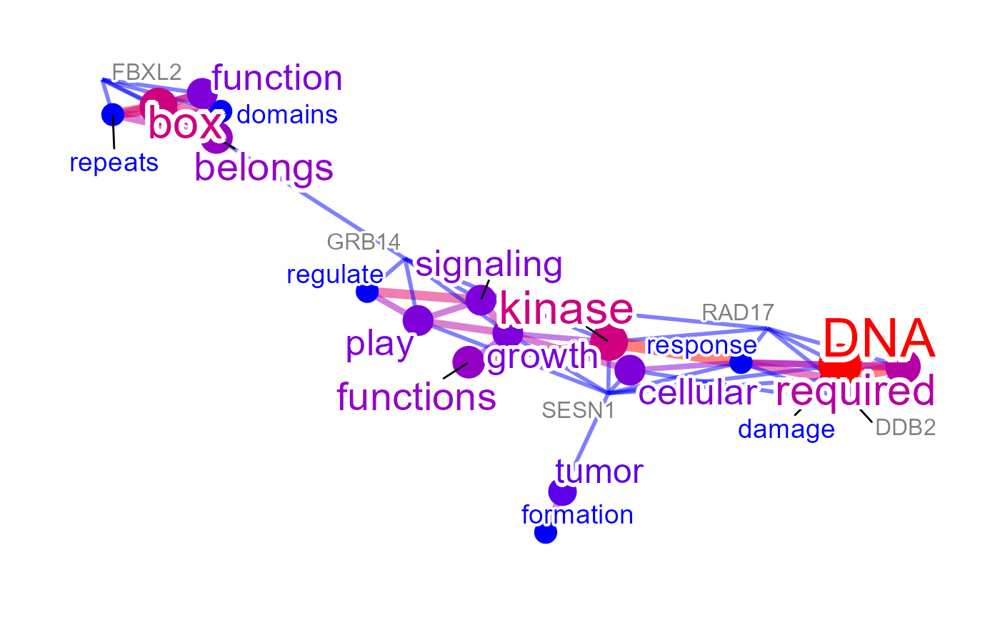
## [1] "SESN1" "GRB14" "RAD17" "DDB2" "FBXL2"Text mining the available literature
These genes are further queried for PubMed information.
abst <- wcAbst(top5)## querying pubmed for SESN1 OR GRB14 OR RAD17 OR DDB2 OR FBXL2
## converting to a data frame ...Show the network for the article titles.
titlenet <- wcAbst(redo=abst, target="title", tfidf=TRUE,
plotType="network", colorText=TRUE, corThresh=0.1,
preset=TRUE)## Resuming from the previous results ...
titlenet$net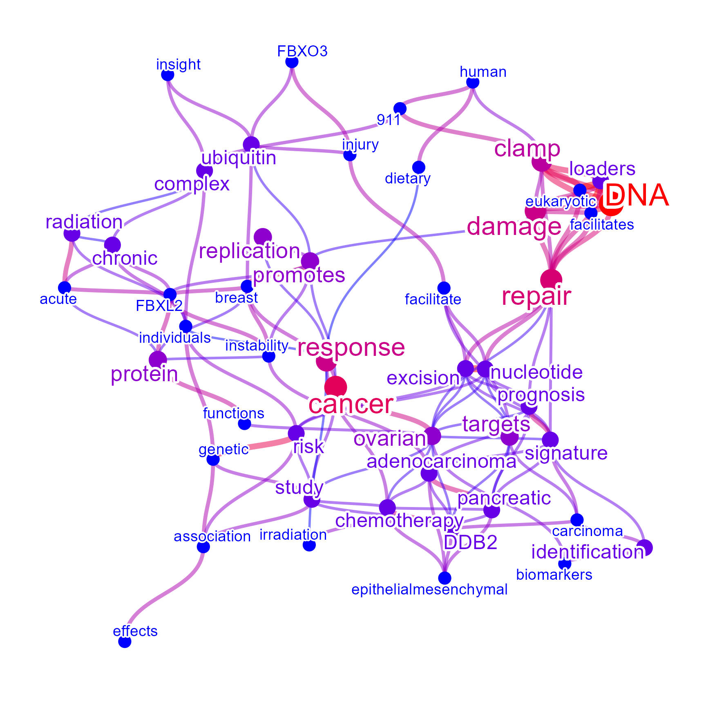
Show the network for the article abstract.
abstnet <- wcAbst(redo=abst, target="abstract", tfidf=TRUE,
plotType="network", colorText=TRUE, corThresh=0.1,
preset=TRUE)## Resuming from the previous results ...## Warning in weighting(x): empty document(s): character(0) character(0)
## character(0) character(0) character(0) character(0) character(0) character(0)
abstnet$net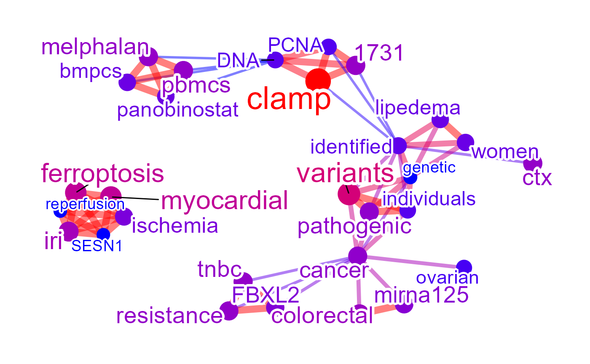
Combine and compare networks
From the RefSeq summary and articles related to important genes, the cluster could have functionality of DNA damage response, which is also upregulated by BKPyV infection. These networks can be combined to find intersections and differences. We can see that in addition to Reactome pathway names, plenty of information could be obtained and summarized by querying other databases, which could aid in interpreting clusters of genes and hypothesis generation.
compareWordNet(list(abstnet, titlenet, netreac, net1),
titles=c("Abstract","Title","Reactome","RefSeq"))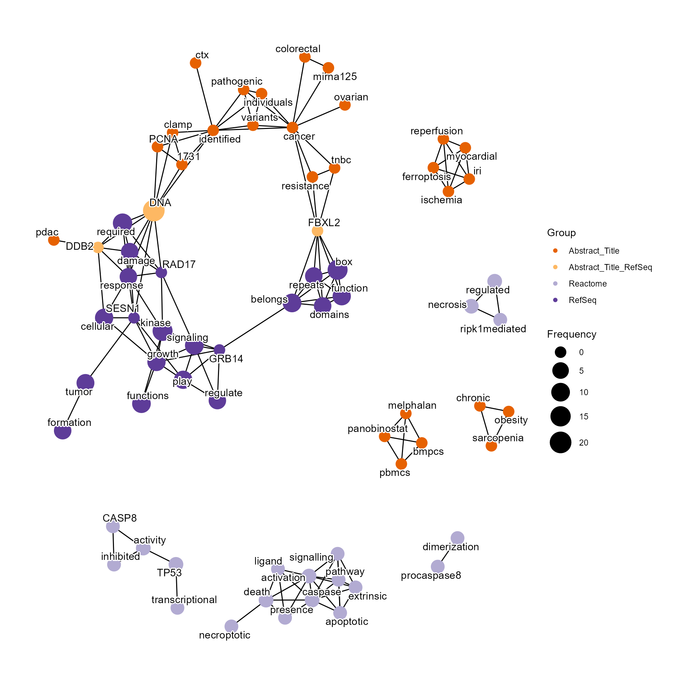
The network can be obtained by returnNet=TRUE, which can
be used for downstream analysis like assessment of degrees and community
detection.
conet <- compareWordNet(list(abstnet, titlenet, netreac, net1), returnNet=TRUE)
conet## IGRAPH 1c7d8e6 UN-- 73 181 --
## + attr: Freq_1 (v/n), Freq_2 (v/n), grp (v/c), name (v/c), Freqs (v/n),
## | col (v/c)
## + edges from 1c7d8e6 (vertex names):
## [1] activation--checkpoint activation--complex activation--interaction
## [4] activation--mtorc1 activation--p53 activation--RAD17
## [7] activation--response activation--SESN1 activation--signaling
## [10] activation--stress activation--pathway activation--apoptotic
## [13] activation--caspase activation--death activation--extrinsic
## [16] activation--ligand activation--presence activation--signalling
## [19] cancer --DDB2 cancer --risk checkpoint--complex
## + ... omitted several edges## activation damage complex response signaling SESN1
## 18 15 13 13 13 12
## DDB2 DNA RAD17 checkpoint XPC caspase
## 11 11 11 9 8 8
## GRB14 interaction proteins
## 7 7 7
wt <- igraph::walktrap.community(conet)
igraph::V(conet)$walktrap <- wt$membership
ggraph(conet)+
geom_node_point(aes(color=factor(walktrap)), size=3)+
geom_edge_link()+
geom_node_text(aes(label=name, color=factor(walktrap)),
check_overlap=TRUE, repel=TRUE,
bg.color = "white", segment.color="black",
bg.r = .15)+
scale_color_discrete(name="Walktrap")+
theme_graph()## Using "stress" as default layout## Warning: Using the `size` aesthetic in this geom was deprecated in ggplot2 3.4.0.
## ℹ Please use `linewidth` in the `default_aes` field and elsewhere instead.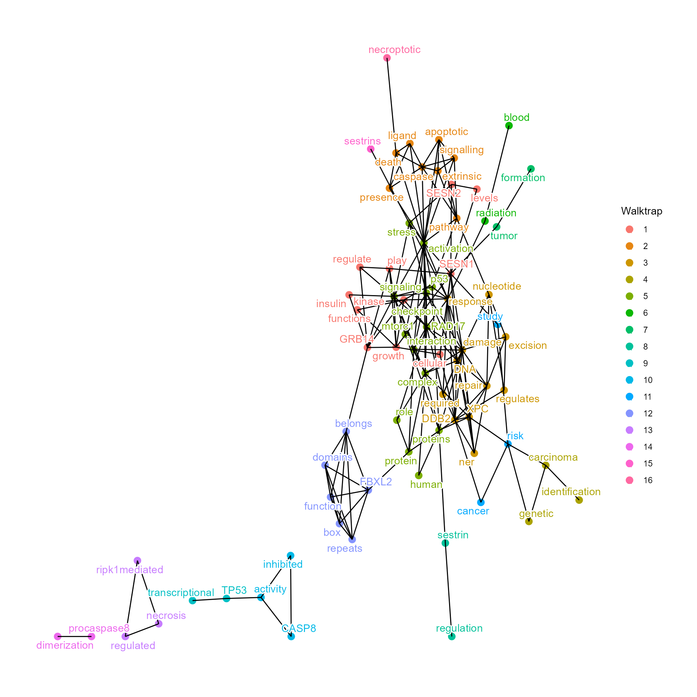
Dynamic layout can be also used to compare the networks, by
graphlayouts, for comparing the multiple graphs, especially
useful for time-series analysis. See the documentation of layout_as_dynamic
for specifying the alpha, which is default to 0.5.
library(igraph)
dyn <- plotDynamic(list(abstnet, titlenet, net1),
titles=c("Abstract","Title","RefSeq"), alpha=1)
dyn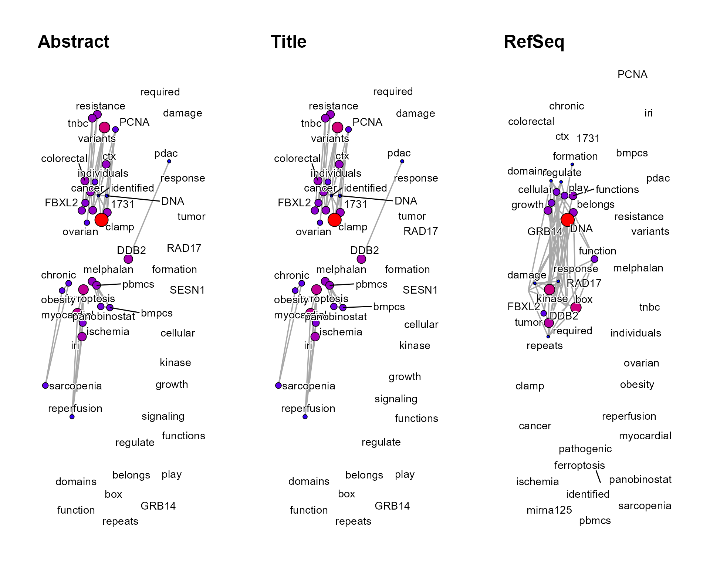
## R version 4.2.2 (2022-10-31 ucrt)
## Platform: x86_64-w64-mingw32/x64 (64-bit)
## Running under: Windows 10 x64 (build 19044)
##
## Matrix products: default
##
## locale:
## [1] LC_COLLATE=Japanese_Japan.utf8 LC_CTYPE=Japanese_Japan.utf8
## [3] LC_MONETARY=Japanese_Japan.utf8 LC_NUMERIC=C
## [5] LC_TIME=Japanese_Japan.utf8
##
## attached base packages:
## [1] stats4 stats graphics grDevices utils datasets methods
## [8] base
##
## other attached packages:
## [1] clusterProfiler_4.6.0 ReactomePA_1.42.0 ggrepel_0.9.2
## [4] limma_3.54.0 igraph_1.3.5 RColorBrewer_1.1-3
## [7] ggraph_2.1.0 ggplot2_3.4.0 org.Hs.eg.db_3.16.0
## [10] AnnotationDbi_1.60.0 IRanges_2.32.0 S4Vectors_0.36.0
## [13] Biobase_2.58.0 BiocGenerics_0.44.0 wcGeneSummary_0.99.0
## [16] BiocStyle_2.26.0
##
## loaded via a namespace (and not attached):
## [1] utf8_1.2.2 tidyselect_1.2.0 RSQLite_2.2.18
## [4] htmlwidgets_1.5.4 grid_4.2.2 BiocParallel_1.32.1
## [7] scatterpie_0.1.8 munsell_0.5.0 codetools_0.2-18
## [10] ragg_1.2.4 withr_2.5.0 colorspace_2.0-3
## [13] GOSemSim_2.24.0 NLP_0.2-1 highr_0.9
## [16] knitr_1.40 rstudioapi_0.14 DOSE_3.24.1
## [19] GeneSummary_0.99.4 labeling_0.4.2 slam_0.1-50
## [22] GenomeInfoDbData_1.2.9 polyclip_1.10-4 bit64_4.0.5
## [25] farver_2.1.1 rprojroot_2.0.3 downloader_0.4
## [28] vctrs_0.5.0 treeio_1.22.0 generics_0.1.3
## [31] gson_0.0.9 xfun_0.30 R6_2.5.1
## [34] GenomeInfoDb_1.34.3 graphlayouts_0.8.3 concaveman_1.1.0
## [37] ISOcodes_2022.09.29 bitops_1.0-7 cachem_1.0.6
## [40] fgsea_1.24.0 gridGraphics_0.5-1 promises_1.2.0.1
## [43] scales_1.2.1 enrichplot_1.18.0 gtable_0.3.1
## [46] tidygraph_1.2.2 rlang_1.0.6 systemfonts_1.0.4
## [49] GlobalOptions_0.1.2 splines_4.2.2 lazyeval_0.2.2
## [52] stopwords_2.3 wordcloud_2.6 BiocManager_1.30.19
## [55] yaml_2.3.6 reshape2_1.4.4 httpuv_1.6.6
## [58] pvclust_2.2-0 qvalue_2.30.0 tools_4.2.2
## [61] bookdown_0.30 ggplotify_0.1.0 ellipsis_0.3.2
## [64] jquerylib_0.1.4 ggdendro_0.1.23 Rcpp_1.0.9
## [67] plyr_1.8.7 base64enc_0.1-3 zlibbioc_1.44.0
## [70] purrr_0.3.5 RCurl_1.98-1.9 bnlearn_4.8.1
## [73] GetoptLong_1.0.5 viridis_0.6.2 cowplot_1.1.1
## [76] fs_1.5.2 magrittr_2.0.3 data.table_1.14.4
## [79] reactome.db_1.79.0 patchwork_1.1.2 mime_0.12
## [82] evaluate_0.18 xtable_1.8-4 HDO.db_0.99.1
## [85] XML_3.99-0.9 gridExtra_2.3 compiler_4.2.2
## [88] bugsigdbr_1.4.0 tibble_3.1.8 V8_4.2.2
## [91] crayon_1.5.2 shadowtext_0.1.2 htmltools_0.5.3
## [94] ggfun_0.0.8 later_1.3.0 tidyr_1.2.1
## [97] aplot_0.1.8 DBI_1.1.3 tweenr_2.0.2
## [100] MASS_7.3-58.1 rappdirs_0.3.3 Matrix_1.5-3
## [103] cli_3.4.1 parallel_4.2.2 pkgconfig_2.0.3
## [106] pkgdown_2.0.6 xml2_1.3.3 ggtree_3.6.2
## [109] bslib_0.4.1 XVector_0.38.0 yulab.utils_0.0.5
## [112] stringr_1.4.1 digest_0.6.30 graph_1.76.0
## [115] Biostrings_2.66.0 tm_0.7-8 rmarkdown_2.18
## [118] fastmatch_1.1-3 tidytree_0.4.1 easyPubMed_2.13
## [121] dendextend_1.16.0 cyjShiny_1.0.34 curl_4.3.3
## [124] shiny_1.7.3 graphite_1.44.0 rjson_0.2.21
## [127] lifecycle_1.0.3 nlme_3.1-160 jsonlite_1.8.3
## [130] desc_1.4.2 viridisLite_0.4.1 fansi_1.0.3
## [133] pillar_1.8.1 lattice_0.20-45 KEGGREST_1.38.0
## [136] fastmap_1.1.0 httr_1.4.4 GO.db_3.16.0
## [139] glue_1.6.2 png_0.1-7 bit_4.0.4
## [142] ggforce_0.4.1 stringi_1.7.8 sass_0.4.2
## [145] blob_1.2.3 textshaping_0.3.6 memoise_2.0.1
## [148] dplyr_1.0.99.9000 ape_5.6-2